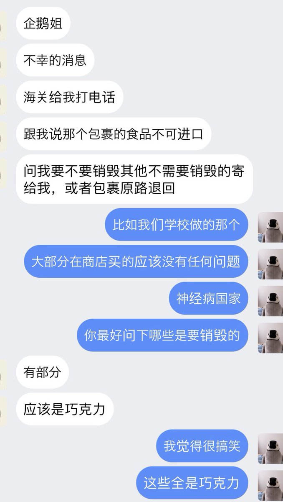
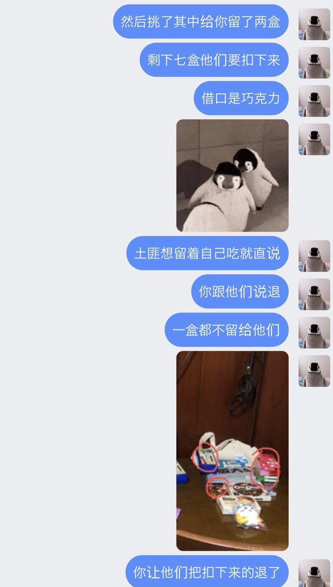
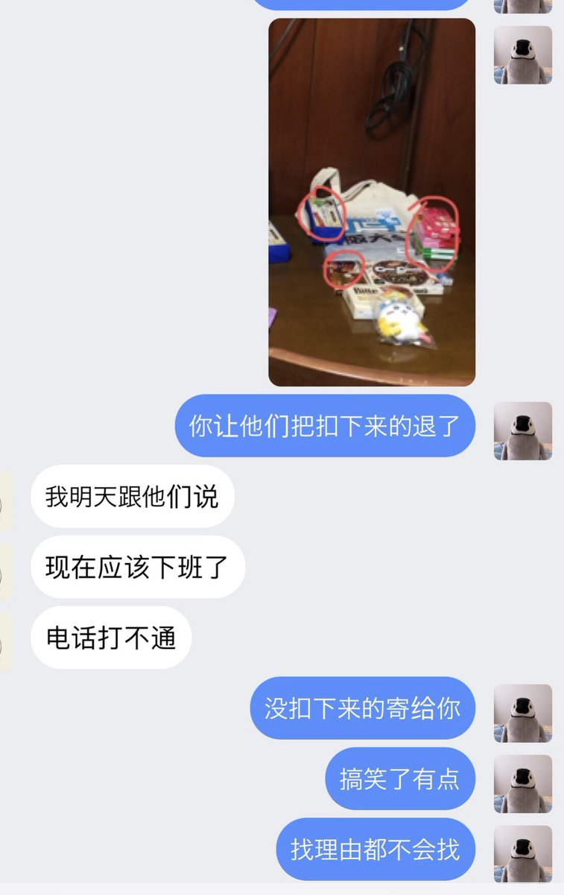

山田リョウ⛩️
@Yamada_Ryoooo
@Kaerigumo1585 除了一针一线全部拿走了



内岛氏理🐧
@Kaerigumo1585
桂枝海关有点搞笑了，超市买的巧克力里挑了几盒看起来比较不错的说巧克力不让进口邮寄得销毁，然后放行两盒在生协超市买的普通的巧克力。有鉴于桂枝海关从远华案开始乃至到现在的一针一线都要拿的光荣传统实在不得不让人更加支持刘阿姨核平洼地 https://t.co/OXXLmQKxMs